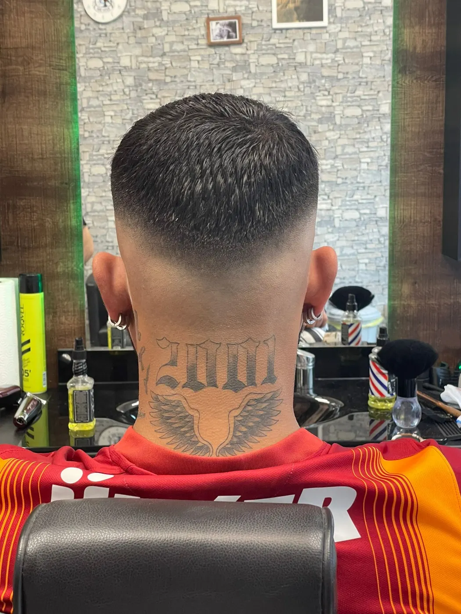
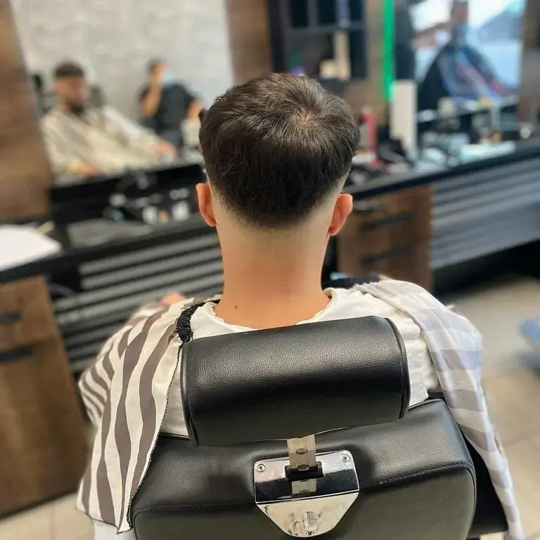

Quatre outils. Quatre frères.
Une affaire de famille où chacun a sa spécialité, et où le geste se transmet.
Le dégradé, au millimètre.
Contours nets, transitions invisibles, ciseaux maîtrisés. Vous ressortez avec exactement ce que vous vouliez.
Ce qu'on fait le mieux.
Les tarifs sont affichés au salon. Appelez si vous voulez un prix avant de venir.
Des coupes qui parlent d'elles-mêmes.
Quelques réalisations du salon, publiées par l'équipe et par les clients.





Fidèles depuis des années.
Beaucoup de clients viennent depuis cinq ou six ans. Ce qui revient le plus dans leurs avis : l'écoute, la rapidité et un résultat impeccable à chaque passage.
Étudiants, familles, habitués du quartier : tout le monde passe, avec ou sans rendez-vous.
« Client fidèle depuis 5 ans chez Best Barber, je suis toujours aussi satisfait ! L'accueil est chaleureux, l'équipe est professionnelle et à l'écoute, et le résultat est impeccable à chaque passage. »
Simao, avis Google« Ça va faire plus de 5 ans que je me rend chez eux et j'ai toujours été satisfait et bien accueilli. »
Zacharie Marquis, avis Google« 6 ans que je suis client, toujours pro, aimables et efficaces. Coupe rapide et propre, s'adaptent à tous les styles pour un prix correct »
Tkrz, avis Google« Très professionnel, rapide, très efficace, je suis chez eux depuis 5 ans. Jamais déçu les meilleures en qualité prix »
Pirate Plein, avis Google
Le salon.
Plafond en hexagones, fauteuils en cuir, et une équipe qui ne chôme pas. Faites glisser.





Passez nous voir.
Horaires
- Lundi
- 9h à 19h
- Mardi
- 9h à 19h
- Mercredi
- 9h à 19h
- Jeudi
- 9h à 19h
- Vendredi
- 9h à 19h
- Samedi
- 8h30 à 17h30
- Dimanche
- Fermé
Chemin du Closelet 61006 LausanneItinéraire →
Avec ou sans rendez-vous. Pour réserver :
078 628 75 05